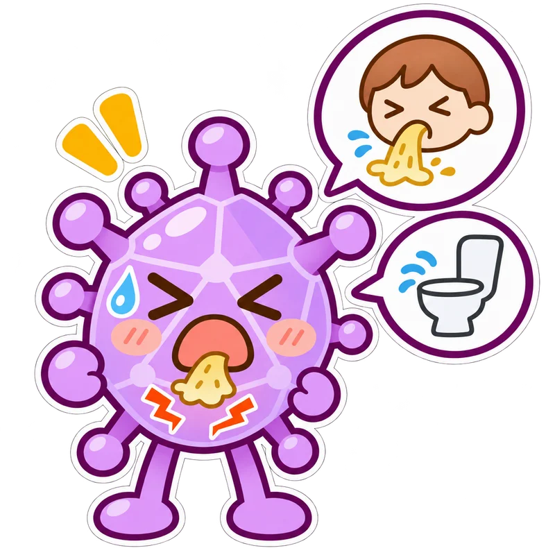
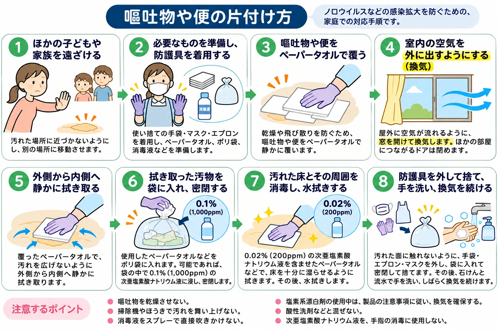

ウイルス性胃腸炎（ノロ・ロタなど）
ノロウイルスやロタウイルスなどで起こり、吐いたり、下痢や腹痛、発熱が出たりします。
水分がとれない、尿が減った、ぐったりしているときは早めに医療機関へ相談してください。

どんな病原体？
ノロウイルス・ロタウイルスなどが原因。嘔吐、下痢、腹痛などが現れる。原因となるウイルスは複数ある。
どうやってうつる？
感染経路の用語を確認
- 経口感染
- 汚染された食品や水、手などを介して病原体が口に入ることで感染する。
- 接触感染
- 病原体が付いた手や物などに触れ、その手で目・鼻・口などに触れることで広がる。
- 飛沫感染
- 嘔吐などで飛び散ったしぶきに含まれるウイルスが口に入るなどして広がる場合がある。
便や吐物に含まれるウイルスが手や食品などを介して口に入ることで広がる。
吐いたもの・下痢便が付いた場所は、どう消毒する？
ノロウイルスやロタウイルスによる胃腸炎が疑われるときは、まず汚れを静かに取り除き、場所に合った方法で消毒する。特にノロウイルスには、アルコール消毒だけでは十分でないことがある。手は石けんと流水で洗う。
① 嘔吐物や便の片付け方

- ほかの子どもや家族を遠ざける。汚れた場所に近づかないようにし、別の場所に移動させます。
- 必要なものを準備し、防護具を着用する。使い捨ての手袋・マスク・エプロンを着用し、ペーパータオル、丈夫なポリ袋、消毒液などを準備します。
- 嘔吐物や便をペーパータオルで覆う。防護具を着用した状態で、乾燥や飛び散りを防ぐために静かに覆います。
- 室内の空気が屋外へ出るように換気する。屋外に面した窓を開け、ほかの部屋につながるドアは閉めます。嘔吐物に直接風を当てないようにします。
- 外側から内側へ静かに拭き取る。汚れを広げないように拭き取ります。
- 拭き取った汚物を袋に入れ、密閉する。使用したペーパータオルなどを丈夫なポリ袋に入れます。可能であれば、袋の中で0.1％（1,000ppm）の次亜塩素酸ナトリウム液に十分浸し、密閉して廃棄します。
- 汚れた床とその周囲を消毒し、水拭きする。0.02％（200ppm）の次亜塩素酸ナトリウム液で床を十分に湿らせるように拭き、その後、水拭きします。材質や製品の注意事項に従います。
- 防護具を外して捨て、手を洗い、換気を続ける。汚れた面に素手で触れないように防護具を外し、袋に密閉して廃棄します。石けんと流水で丁寧に手を洗い、処理後も十分に換気します。
嘔吐物を乾燥させず、掃除機やほうきで汚れを舞い上げないようにしましょう。消毒液を使用するときは製品の注意事項に従って換気を確保してください。
厚生労働省のノロウイルスに関するQ&A（Q20）を基本に、家庭での飛散防止や安全確保のため、家族を遠ざけることや、覆ってから換気する手順などを補足しています。
② どこを、どの濃度で消毒する？
| 場所・もの | 目安となる方法 |
|---|---|
| 嘔吐物・便が付いた床や周囲 | 汚れを取り除いてから、0.02％（200ppm）の次亜塩素酸ナトリウム液で消毒し、水拭きします。 |
| 回収した嘔吐物・便やペーパー類 | 袋の中で0.1％（1,000ppm）の次亜塩素酸ナトリウム液に十分浸すことが望ましく、袋を密閉して廃棄します。 |
| 普段触れるドアノブ・手すりなど | 汚れを落とした後、0.02％（200ppm）程度の次亜塩素酸ナトリウム液で拭き、必要に応じて水拭きする。金属は腐食に注意。 |
| 熱に強い食器・ふきんなど | 洗浄後、85℃以上で1分以上の加熱が有効。材質や耐熱性を確認する。 |
| 手指 | 次亜塩素酸ナトリウム液を使わず、石けんと流水で十分に洗う。 |
③ 家庭用の塩素系漂白剤から作るとき
有効塩素濃度5％の次亜塩素酸ナトリウム製品であれば、次の割合が目安となる。製品の表示濃度が異なる場合は同じ量で作れない。
| 作りたい消毒液 | 水500mLに加える5％製品の量（概算） |
|---|---|
| 0.1％（1,000ppm） | 約10mL |
| 0.02％（200ppm） | 約2mL |
安全上の注意：必ず製品の使用方法を確認し、使用直前に調製する。酸性洗剤・酢・アルコールなど他の薬剤と絶対に混ぜない。嘔吐物に原液を直接かけない。消毒液を霧吹きで噴霧しない。手指や皮膚には使用せず、子どもの手が届かない場所で扱う。金属・色落ちしやすい素材は製品の注意に従い、水拭きをする。
布団・衣服・カーペットなど、塩素系消毒液を使いにくい素材では、まず汚染を広げずに取り除き、洗濯表示や素材に適した加熱・洗浄方法を確認する。
症状が治まった後も便にウイルスが排出されることがあるため、おむつ交換後やトイレの後の手洗いを続ける。
参考：厚生労働省「ノロウイルスに関するQ&A」 ／ 政府広報オンライン「ノロウイルスに要注意！」 ／ 厚生労働省「ノロウイルスの感染を広げないために」（PDF） ／ こども家庭庁「保育所における感染症対策ガイドライン」
学校・園はいつから行ける？
- 学校・幼稚園の出席停止
- 一律の日数はありません。学校の案内を確認。
- 保育所の登園の目安
- 嘔吐や下痢がおさまり、普段の食事がとれる。